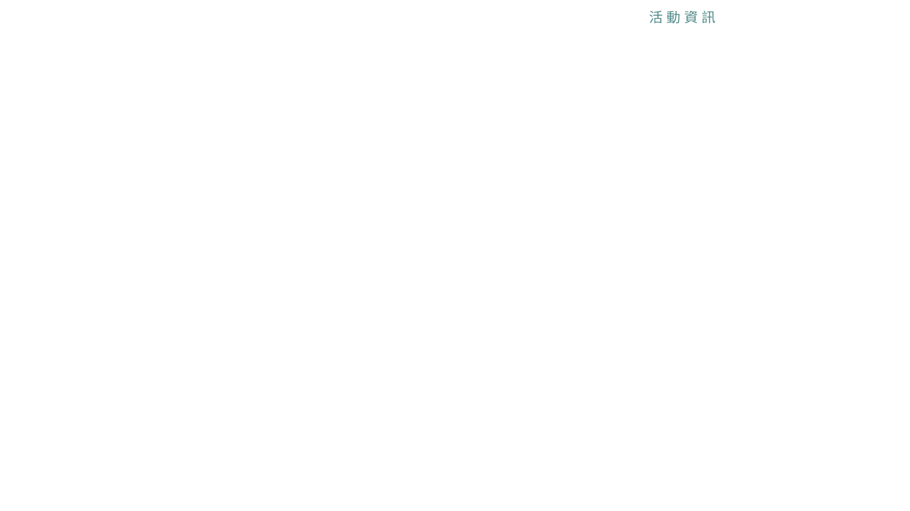

<!doctype html>
<html lang="en" class="no-js">
<head>
	<meta charset="UTF-8">
	<meta name="viewport" content="width=device-width, initial-scale=1">

	<link href='http://fonts.googleapis.com/css?family=Ubuntu:300,400,700' rel='stylesheet' type='text/css'>

	<link rel="stylesheet" href="css/reset.css"> <!-- CSS reset -->
	<link rel="stylesheet" href="css/style.css"> <!-- Resource style -->
	<script src="js/modernizr.js"></script> <!-- Modernizr -->
	<script src="js/stlye.js"></script>
	<!-- 最新編譯和最佳化的 CSS -->
	<link rel="stylesheet" href="https://maxcdn.bootstrapcdn.com/bootstrap/3.3.1/css/bootstrap.min.css">
	<!-- 選擇性佈景主題 -->
	<link rel="stylesheet" href="https://maxcdn.bootstrapcdn.com/bootstrap/3.3.1/css/bootstrap-theme.min.css">
	<!-- 最新編譯和最佳化的 JavaScript -->
	<script src="https://maxcdn.bootstrapcdn.com/bootstrap/3.3.1/js/bootstrap.min.js"></script>

	<title>test2</title>
</head>
<body>
  <!--
  <div>
  
  
  
  
  
  </div>
-->
<div></div>
<div></div>
<div class="headline">


</div>
<style>
body {
	margin: -5px;
}

div img {
  position: absolute;
  width: 100%;
  height: 100%;
	padding-top: 15px;
}

.headline {
	margin-left: 10px;
}


#logo {
	position: fixed;

}
</style>
</body>
